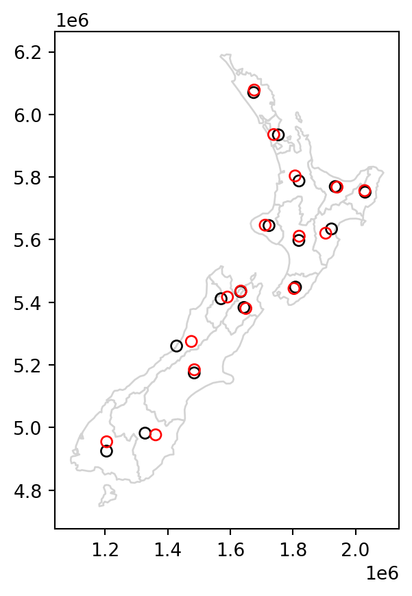
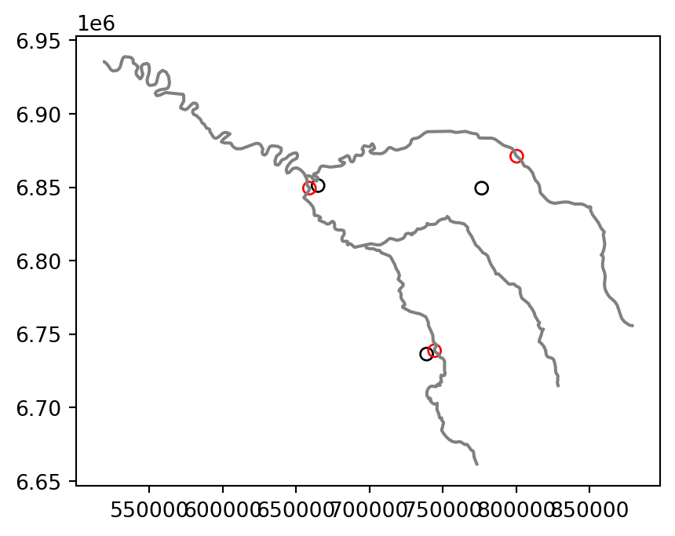
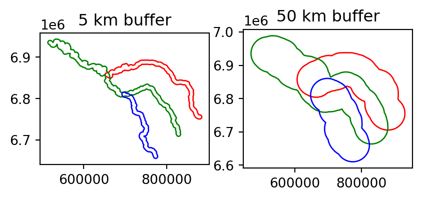
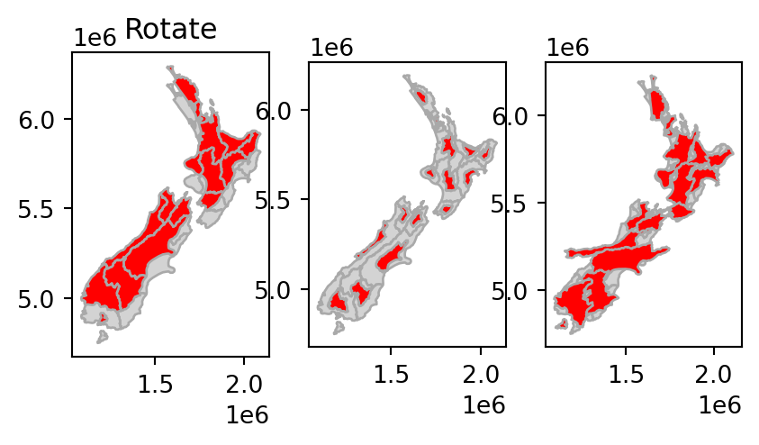

import pandas as pd
import matplotlib.pyplot as plt
pd.set_option("display.max_rows", 4)
pd.set_option("display.max_columns", 6)
pd.options.display.max_rows = 10
pd.options.display.max_columns = 6
pd.options.display.max_colwidth = 35
plt.rcParams["figure.figsize"] = (5, 5)5 Geometry operations
5.1 Prerequisites
Packages…
import geopandas as gpdSample data…
seine = gpd.read_file("data/seine.gpkg")
us_states = gpd.read_file("data/us_states.gpkg")
nz = gpd.read_file("data/nz.gpkg")5.2 Introduction
5.3 Geometric operations on vector data
5.3.1 Simplification
Simplify…
seine_simp = seine.simplify(2000) # 2000 mPlot:
fig, axes = plt.subplots(ncols=2)
seine.plot(ax=axes[0])
seine_simp.plot(ax=axes[1])
axes[0].set_title("Original")
axes[1].set_title("Simplified (d=2000 m)");
Compare number of nodes:
import sys
sys.getsizeof(seine) ## Original (bytes)354sys.getsizeof(seine_simp) ## Simplified (bytes)168US states example…. Transform…
us_states2163 = us_states.to_crs(2163)Simplify…
us_states_simp1 = us_states2163.simplify(100000)Plot…
us_states_simp1.plot();
import topojson as tp
topo = tp.Topology(us_states2163, prequantize=False)
us_states_simp2 = topo.toposimplify(100000).to_gdf()/usr/local/lib/python3.8/dist-packages/topojson/core/extract.py:332: ShapelyDeprecationWarning: Iteration over multi-part geometries is deprecated and will be removed in Shapely 2.0. Use the `geoms` property to access the constituent parts of a multi-part geometry.
for ring in geom:
<__array_function__ internals>:180: ShapelyDeprecationWarning: The array interface is deprecated and will no longer work in Shapely 2.0. Convert the '.coords' to a numpy array instead.
/usr/local/lib/python3.8/dist-packages/topojson/core/topology.py:482: ShapelyDeprecationWarning: The array interface is deprecated and will no longer work in Shapely 2.0. Convert the '.coords' to a numpy array instead.
result.output["arcs"] = simplify(fig, axes = plt.subplots(ncols=3, figsize=(9,5))
us_states2163.plot(ax=axes[0])
us_states_simp1.plot(ax=axes[1])
us_states_simp2.plot(ax=axes[2])
axes[0].set_title("Original")
axes[1].set_title("Simplified (w/ geopandas)")
axes[2].set_title("Simplified (w/ topojson)");
5.3.2 Centroids
Centroids…
nz_centroid = nz.centroid
seine_centroid = seine.centroidPoint on surface…
nz_pos = nz.representative_point()
seine_pos = seine.representative_point()base = nz.plot(color="white", edgecolor="lightgrey")
nz_centroid.plot(ax=base, color="None", edgecolor="black")
nz_pos.plot(ax=base, color="None", edgecolor="red");
base = seine.plot(color="grey")
seine_centroid.plot(ax=base, color="None", edgecolor="black")
seine_pos.plot(ax=base, color="None", edgecolor="red");
5.3.3 Buffers
Buffers…
seine_buff_5km = seine.buffer(5000)
seine_buff_50km = seine.buffer(50000)Plot…
fig, axes = plt.subplots(ncols=2)
seine_buff_5km.plot(ax=axes[0], color="None", edgecolor=["red", "green", "blue"])
seine_buff_50km.plot(ax=axes[1], color="None", edgecolor=["red", "green", "blue"])
axes[0].set_title("5 km buffer")
axes[1].set_title("50 km buffer");
5.3.4 Affine transformations
Affine transformations of GeoSeries can be done using the .affine_transform method, which is a wrapper around the shapely.affinity.affine_transform function. According to the documentation, a 2D affine transformation requires a six-parameter list [a,b,d,e,xoff,yoff] which represents the following equations for transforming the coordinates:
\[ x' = a x + b y + x_\mathrm{off} \]
\[ y' = d x + e y + y_\mathrm{off} \]
There are also simplified GeoSeries methods for specific scenarios:
GeoSeries.rotate(angle, origin='center', use_radians=False)GeoSeries.scale(xfact=1.0, yfact=1.0, zfact=1.0, origin='center')GeoSeries.skew(angle, origin='center', use_radians=False)GeoSeries.translate(xoff=0.0, yoff=0.0, zoff=0.0)
For example, shifting only requires the \(x_{off}\) and \(y_{off}\), using .translate. The code below shifts the y-coordinates by 100,000 meters to the north, but leaves the x-coordinates untouched:
nz_shift = nz["geometry"].translate(0, 100000)Scale…
nz_scale = nz["geometry"].scale(0.5, 0.5, origin="centroid")Rotate…
nz_rotate = nz["geometry"].rotate(-30, origin="centroid")Plot…
fig, axes = plt.subplots(ncols=3, figsize=(9,5))
nz.plot(ax=axes[0], color="lightgrey", edgecolor="darkgrey")
nz_shift.plot(ax=axes[0], color="red", edgecolor="darkgrey")
nz.plot(ax=axes[1], color="lightgrey", edgecolor="darkgrey")
nz_scale.plot(ax=axes[1], color="red", edgecolor="darkgrey")
nz.plot(ax=axes[2], color="lightgrey", edgecolor="darkgrey")
nz_rotate.plot(ax=axes[2], color="red", edgecolor="darkgrey")
axes[0].set_title("Shift")
axes[1].set_title("Scale")
axes[2].set_title("Rotate");
5.3.5 Clipping
…
5.3.6 Subsetting and clipping
…
5.3.7 Geometry unions
…
5.3.8 Type transformations
…
5.4 Geometric operations on raster data
5.4.1 Geometric intersections
…
5.4.2 Extent and origin
…
5.4.3 Aggregation and disaggregation
…
5.4.4 Resampling
…